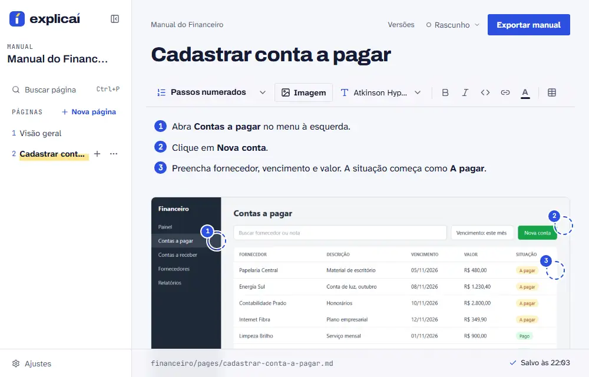

Para quem entrega manual a cliente e para quem mantém sistema
Tira o print e explica. O Explicaí monta o manual.
O manual sai com a logo e as cores do cliente e com os dados dele escondidos. PDF, HTML ou Markdown, grátis e open source.
npx explicai manuais
Precisa de Node 20.12 ou mais novo. Roda na sua máquina, sem conta e sem nuvem.

Toda tela que muda desatualiza o manual.
Refazer o print, a marcação e o texto de cada passo toma tempo, e é fácil deixar o manual para depois.
Como funciona
Do print ao manual, em três passos
-
1 Cole o print.
Copie a tela do seu sistema e cole na página. A imagem entra no manual.
-
2 Marque a tela.
Coloque marcadores numerados, destaques, setas e áreas clicáveis, e escreva o que a pessoa faz em cada um.
-
3 Exporte.
Gere PDF, HTML ou Markdown com um clique.
O Explicaí não captura a tela. O print vem de você. Veja um manual feito no Explicaí →
O que vem junto
Além do print e da marcação
Dado do cliente fora do print
Ocultar queima tarja ou desfoque nos pixels do print e apaga o original.
O manual com a cara do cliente
Logo na capa, cores do tema e nove fontes que vão junto do HTML.
Perguntas rápidas
O que segura a instalação
- Preciso de conta?
- Não. O Explicaí roda em
localhoste salva numa pasta sua. - E os dados do meu cliente nos prints?
- Use a ferramenta Ocultar: ela queima uma tarja ou um desfoque nos pixels e apaga o original. Tudo roda na sua máquina. Exports antigos ainda têm o original, então gere de novo.
- O que preciso instalar?
- Node 20.12 ou mais novo. O resto o
npxbaixa.
Comece pelo seu primeiro manual.
npx explicai manuais